Giới thiệu
khoa học dữ liệu
Học kỳ I, năm học 2026–2027
Trường Đại học Công nghệ, ĐHQGHN
Bài 4
Toán học trong
khoa học dữ liệu
Phần 2: toán rời rạc và đồ thị, lý thuyết thông tin,
toán học tính toán, hình học và tô pô, tổng kết và lộ trình thực hành.
Nhắc lại bản đồ tám nhánh
Khung tham chiếu: Deisenroth, Faisal & Ong, Mathematics for Machine Learning, Cambridge University Press, 2020.
Tổng quan buổi học
- Toán rời rạc và lý thuyết đồ thị: mạng xã hội, PageRank, đường đi ngắn nhất
- Lý thuyết thông tin: entropy, information gain, cây quyết định
- Toán học tính toán: sai số số học, đạo hàm xấp xỉ, phương pháp Newton
- Hình học và tô pô: khoảng cách Euclid, Persistent Homology
- Tổng kết tám nhánh, ví dụ mạng neural network, chín thư viện mã nguồn mở
- Lộ trình thực hành tám lab, tài liệu tham khảo, kết luận
Mỗi nhánh theo cùng một cấu trúc như bài 3: vấn đề thực tế, lịch sử, nhân vật, công thức, mã Python chạy được và liên hệ ngành.
6.
Toán rời rạc và
lý thuyết đồ thị
Discrete Mathematics & Graph Theory: mạng xã hội, PageRank và đường đi ngắn nhất
Vì sao cần lý thuyết đồ thị?
Facebook gợi ý kết bạn, Google xếp hạng trang web, Grab tìm đường đi nhanh nhất. Ba bài toán có chung một cấu trúc dữ liệu:
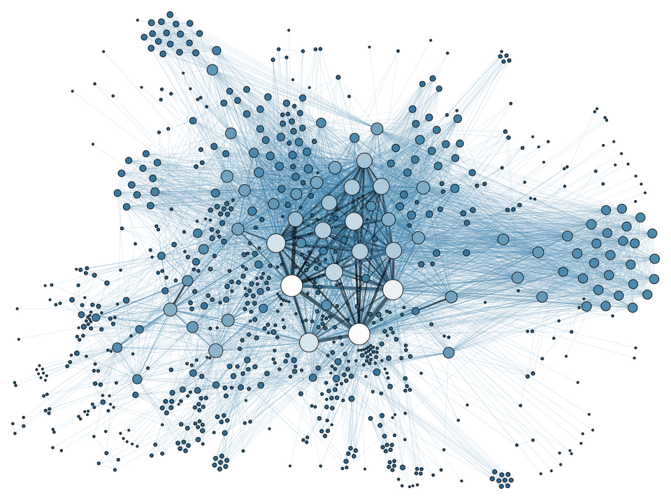
| Nút (đỉnh) | Người dùng, trang web, giao lộ |
| Cạnh | Quan hệ bạn bè, liên kết, đoạn đường |
| Trọng số | Độ thân thiết, độ quan trọng, chi phí |
Dòng thời gian lý thuyết đồ thị
Các mốc là cột mốc tiêu biểu, không phải lịch sử đầy đủ của ngành.
Nguồn tổng quan: Wikipedia — Graph theory (History) · Kipf & Welling, Semi-Supervised Classification with Graph Convolutional Networks, arXiv, 2016.
1736: bảy cây cầu Königsberg
Phạm vi công cộng, Wikimedia Commons
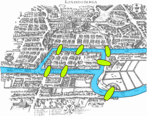
Bogdan Giuşcă, CC BY-SA 3.0, Wikimedia Commons
Leonhard Euler giải quyết bài toán bảy cây cầu: có thể đi qua mỗi cây cầu đúng một lần hay không.
Euler coi mỗi vùng đất là một nút, mỗi cây cầu là một cạnh. Lập luận của ông chỉ phụ thuộc cấu trúc kết nối, không phụ thuộc hình dạng hay khoảng cách.
Nguồn: Wikipedia — Seven Bridges of Königsberg · MacTutor — Euler.
Cayley, Erdős và Rényi
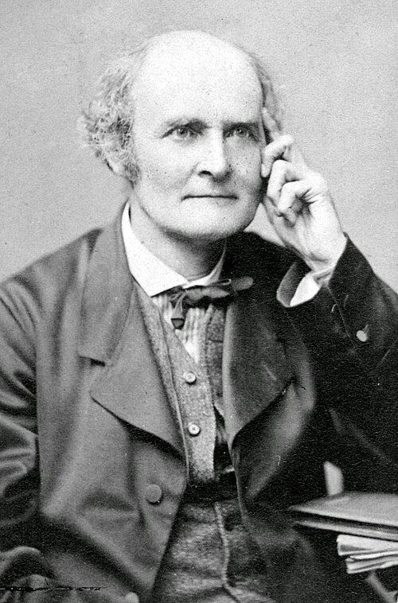
Phạm vi công cộng, Wikimedia Commons
Kmhkmh, CC BY 3.0, Wikimedia Commons
Konrad Jacobs, CC BY-SA 4.0, Wikimedia Commons
| Mốc | Sự kiện |
|---|---|
| Thế kỷ XIX | Cayley nghiên cứu cây và liệt kê cấu trúc hợp chất hóa học bằng đồ thị |
| 1959 – 1960 | Erdős và Rényi đặt nền cho đồ thị ngẫu nhiên, tiền đề của khoa học mạng (network science) |
Nguồn: MacTutor — Cayley · MacTutor — Erdős · MacTutor — Rényi · Erdős & Rényi, On random graphs I, 1959.
1996 – 1998: PageRank
Larry Page và Sergey Brin, khi còn là nghiên cứu sinh tại Stanford, đề xuất PageRank: xếp hạng trang web dựa trên cấu trúc liên kết.
Một trang quan trọng khi được nhiều trang quan trọng khác trỏ tới. Định nghĩa này đệ quy, và được giải bằng đại số tuyến tính trên đồ thị.
Nguồn: Brin & Page, The Anatomy of a Large-Scale Hypertextual Web Search Engine, 1998 · Page, Brin, Motwani & Winograd, The PageRank Citation Ranking, Stanford InfoLab, 1999.
Những nhân vật tiêu biểu
Phạm vi công cộng, Wikimedia Commons
Hamilton Richards, CC BY-SA 3.0, Wikimedia Commons
Kmhkmh, CC BY 3.0, Wikimedia Commons
Konrad Jacobs, CC BY-SA 4.0, Wikimedia Commons
Ehud Kenan, CC BY 2.0, Wikimedia Commons
Nguồn: Wikipedia — Graph theory (History) · ACM A.M. Turing Award — Dijkstra.
Ứng dụng 1. Phân tích mạng xã hội
Cần tìm người dùng có ảnh hưởng lớn trong một mạng. Một thước đo đơn giản là độ trung tâm bậc (degree centrality):
| \(\deg(v)\) | Số cạnh nối với nút \(v\), tức số người mà \(v\) kết nối trực tiếp |
| \(n\) | Tổng số nút trong đồ thị |
| \(C_D(v)\) | Tỉ lệ nút còn lại mà \(v\) kết nối tới, nhận giá trị từ 0 đến 1 |
Thực hành: networkx.degree_centrality(G). NetworkX — degree_centrality.
Ứng dụng 2. PageRank: công thức
| \(PR(p)\) | Điểm PageRank của trang \(p\) |
| \(q\to p\) | Các trang \(q\) có liên kết tới \(p\) |
| \(L(q)\) | Số liên kết đi ra của trang \(q\) |
| \(N\) | Tổng số trang |
| \(d\) | Hệ số damping, thường lấy 0,85 |
Mỗi trang chia điểm của mình đều cho các trang nó trỏ tới. Số hạng \((1-d)/N\) mô tả người lướt web thỉnh thoảng nhảy sang một trang bất kỳ.
PageRank bằng NetworkX
import networkx as nx
G = nx.DiGraph()
G.add_edges_from([
("A", "B"),
("A", "C"),
("B", "C"),
("C", "A"),
("D", "C"),
("D", "A"),
("E", "C")
])
scores = nx.pagerank(G, alpha=0.85)
for node, score in sorted(
scores.items(),
key=lambda item: item[1],
reverse=True
):
print(node, round(score, 4))
C 0.384 A 0.3691 B 0.1869 D 0.03 E 0.03
Nguồn: NetworkX — pagerank.
Đồ thị của ví dụ PageRank
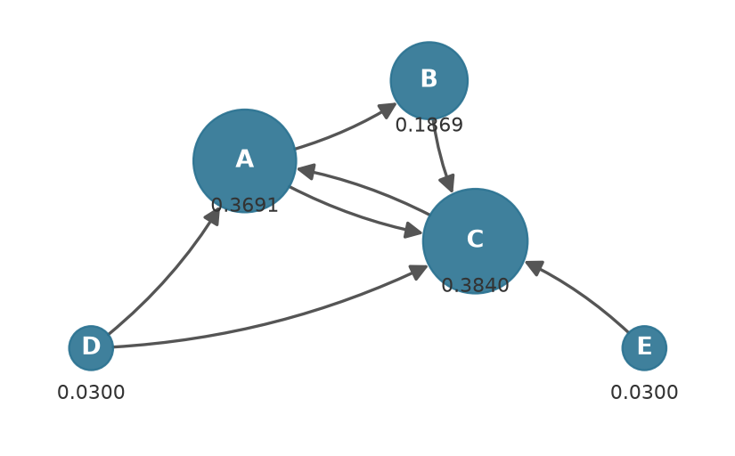
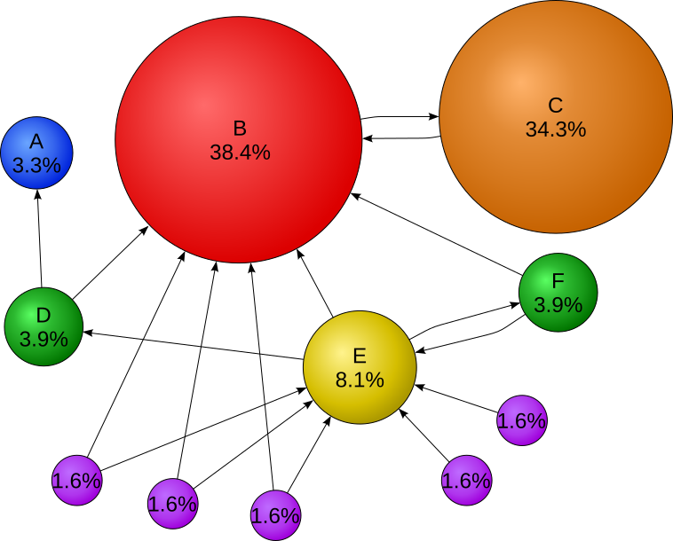
Ứng dụng 3. Đường đi ngắn nhất
Ứng dụng gọi xe cần tìm lộ trình có chi phí nhỏ nhất giữa hai điểm.
Thuật toán Dijkstra (1959) cập nhật khoảng cách tạm thời qua phép nới lỏng cạnh (relaxation):
| \(w(e)\) | Trọng số (chi phí) của cạnh \(e\), không âm |
| \(P\) | Một đường đi từ \(s\) tới \(t\) |
| \(d[v]\) | Chi phí nhỏ nhất đã biết từ nguồn tới nút \(v\) |
Đường đi ngắn nhất bằng NetworkX
import networkx as nx
G = nx.Graph()
G.add_weighted_edges_from([
("A", "B", 4),
("A", "C", 2),
("B", "C", 1),
("B", "D", 5),
("C", "D", 8),
("C", "E", 10),
("D", "E", 2)
])
path = nx.shortest_path(
G, "A", "E", weight="weight"
)
distance = nx.shortest_path_length(
G, "A", "E", weight="weight"
)
print("Đường đi:", path)
print("Chi phí:", distance)
Đường đi: ['A', 'C', 'B', 'D', 'E'] Chi phí: 10
Nguồn: NetworkX — Shortest Paths.
Minh họa Dijkstra
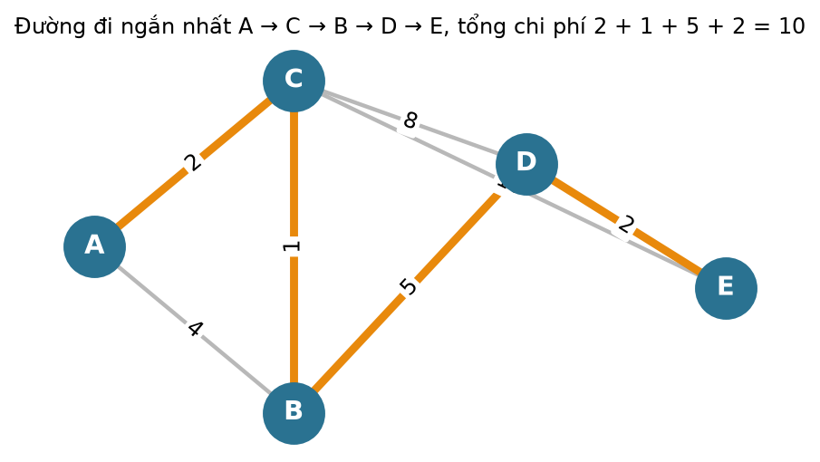
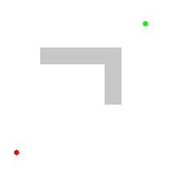
Liên hệ ngành: đồ thị
7.
Lý thuyết thông tin
Information Theory: entropy, information gain và cây quyết định
Vì sao cần lý thuyết thông tin?
Ba chiếc hộp, mỗi hộp chứa bóng đỏ và bóng xanh. Rút ngẫu nhiên một quả, hộp nào cho kết quả khó đoán nhất?
| Hộp | Tỉ lệ đỏ : xanh | Mức khó đoán | Entropy |
|---|---|---|---|
| A | 50% : 50% | Khó đoán nhất | 1 bit |
| B | 90% : 10% | Khá dễ đoán | 0,469 bit |
| C | 100% : 0% | Chắc chắn | 0 bit |
Giá trị entropy ở cột cuối sẽ được tính ở mục “Entropy” và kiểm bằng mã Python.
Dòng thời gian lý thuyết thông tin
Các mốc là cột mốc tiêu biểu, không phải lịch sử đầy đủ của ngành.
Nguồn tổng quan: MacTutor — Claude Shannon · IEEE Information Theory Society — giới thiệu.
1928: Ralph Hartley
This photograph of RVL Hartley was among his personal belong, CC BY-SA 3.0, Wikimedia Commons
Hartley công bố bài Transmission of Information tại Bell System Technical Journal. Ông đề xuất đo lượng thông tin bằng số lượng lựa chọn có thể:
\(s\): số ký hiệu khả dĩ ở mỗi lần chọn. \(n\): số lần chọn. Lượng thông tin tăng tuyến tính theo \(n\) nhờ hàm logarit.
Nguồn: R. V. L. Hartley, Transmission of Information, Bell System Technical Journal 7(3), 535–563, 1928.
1948: Claude Shannon
Phạm vi công cộng, Wikimedia Commons
Claude Shannon công bố A Mathematical Theory of Communication tại Bell Labs, đặt nền móng cho lý thuyết thông tin.
- Đưa ra khái niệm entropy của một nguồn tin.
- Xác định giới hạn nén dữ liệu không mất mát.
- Xác định dung lượng kênh truyền tối đa khi có nhiễu.
Nguồn: C. E. Shannon, A Mathematical Theory of Communication, Bell System Technical Journal 27, 379–423, 1948 · Nokia Bell Labs.
Wiener, Bell Labs và các tổ chức

Konrad Jacobs, CC BY-SA 2.0 de, Wikimedia Commons
Cùng năm 1948, Norbert Wiener xuất bản Cybernetics, nghiên cứu điều khiển và truyền thông trong máy và sinh vật, bổ sung nền tảng cho xử lý tín hiệu và thông tin.
Nguồn: N. Wiener, Cybernetics, MIT Press, 1948 · IEEE Information Theory Society.
Những nhân vật tiêu biểu
This photograph of RVL Hartley was among his personal belong, CC BY-SA 3.0, Wikimedia Commons
Phạm vi công cộng, Wikimedia Commons
Konrad Jacobs, CC BY-SA 2.0 de, Wikimedia Commons

Phạm vi công cộng, Wikimedia Commons
Nguồn: MacTutor — Shannon · MacTutor — Wiener · MacTutor — Turing.
Ứng dụng 1. Entropy
Đo mức bất định của một phân phối xác suất:
| \(p_i\) | Xác suất của kết quả thứ \(i\) |
| \(\log_2\) | Logarit cơ số 2, đơn vị đo là bit |
| \(H(X)\) | Entropy: số bit trung bình cần để mô tả một kết quả |
Quy ước \(0\log 0=0\). Entropy lớn nhất khi các kết quả đồng khả năng, bằng 0 khi kết quả chắc chắn.
Nguồn: Shannon, 1948.
Tính entropy bằng SciPy
import numpy as np
from scipy.stats import entropy
distributions = [
[0.5, 0.5],
[0.9, 0.1],
[1.0, 0.0]
]
for p in distributions:
print(entropy(p, base=2))
1.0 0.46899559358928117 0.0
Nguồn: SciPy — scipy.stats.entropy.
Entropy của biến nhị phân
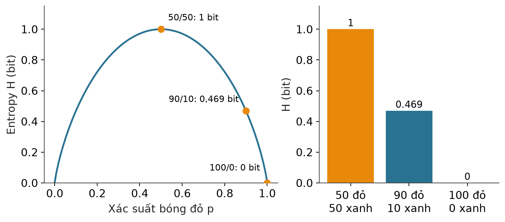
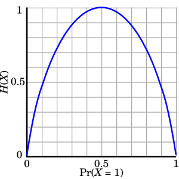
Ứng dụng 2. Information Gain
Một đặc trưng tốt giúp giảm độ bất định về nhãn \(Y\). Mức giảm đó là information gain:
| \(H(Y)\) | Entropy của nhãn trước khi biết đặc trưng |
| \(H(Y\mid X)\) | Entropy trung bình của nhãn sau khi chia dữ liệu theo \(X\) |
| \(IG\) | Lượng thông tin về \(Y\) mà \(X\) cung cấp |
Cây quyết định chọn, tại mỗi nút, phép chia có information gain lớn nhất. Đại lượng này chính là mutual information giữa \(X\) và \(Y\).
Nguồn: J. R. Quinlan, Induction of Decision Trees, Machine Learning 1, 81–106, 1986 · scikit-learn — Decision Trees.
Cây quyết định với tiêu chí entropy
import numpy as np
from sklearn.tree import DecisionTreeClassifier
from sklearn.datasets import load_breast_cancer
from sklearn.model_selection import train_test_split
from sklearn.metrics import accuracy_score
data = load_breast_cancer()
X, y = data.data, data.target
X_train, X_test, y_train, y_test = train_test_split(
X, y, test_size=0.2, random_state=42
)
model = DecisionTreeClassifier(
criterion="entropy",
max_depth=4,
random_state=42
)
model.fit(X_train, y_train)
pred = model.predict(X_test)
print("Accuracy:", accuracy_score(y_test, pred))
print("Information gain:", model.feature_importances_)
Accuracy: 0.956140350877193 Information gain: [0. 0. 0. 0. 0. 0. 0. 0.61264211 0. 0. 0. 0.00661784 0.00945136 0.02248308 0. 0. 0. 0.01934258 0. 0. 0.08230492 0.11464579 0.10962389 0. 0. 0. 0. 0.02288843 0. 0. ]
mean concave points đưa entropy từ 0,952 xuống còn 0,391 (trung bình có trọng số hai nhánh), tức \(IG\approx0{,}561\) bit tại nút gốc. Mảng in ra là feature_importances_: tổng giảm entropy của từng đặc trưng trên toàn cây, đã chuẩn hóa để tổng bằng 1.Nguồn: scikit-learn — DecisionTreeClassifier · Breast cancer Wisconsin dataset.
Đọc kết quả cây quyết định
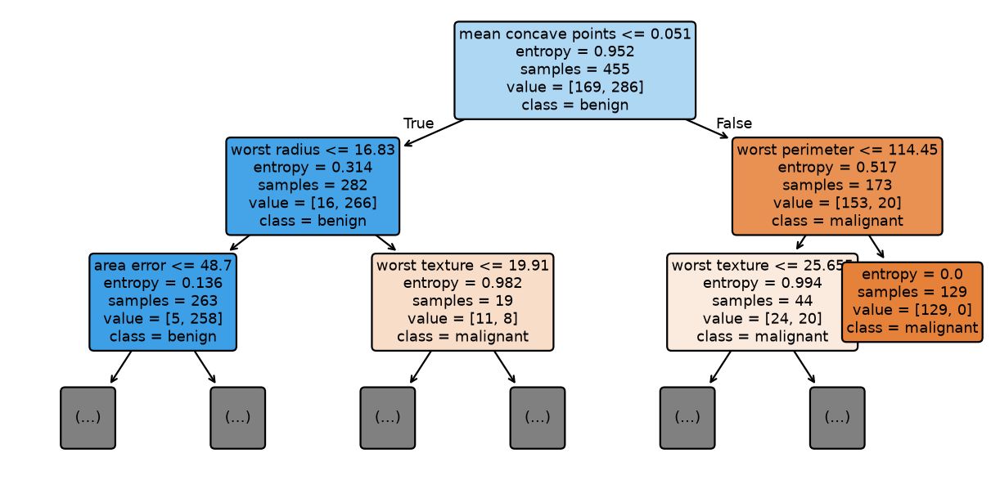
- Độ chính xác trên tập kiểm tra: 0,956.
- Đặc trưng quan trọng nhất:
mean concave points(0,613). - Hai đặc trưng tiếp theo:
worst texture(0,115) vàworst perimeter(0,110). - Phần lớn đặc trưng có giá trị 0 vì cây giới hạn độ sâu 4 và không dùng chúng.
Liên hệ ngành: lý thuyết thông tin
8.
Toán học tính toán
Numerical Mathematics: sai số, xấp xỉ và tính toán hiệu quả
Vì sao cần toán học tính toán?
Máy tính không làm việc với số thực chính xác. Nó lưu số bằng một số hữu hạn bit, nên mọi phép tính đều có sai số làm tròn.
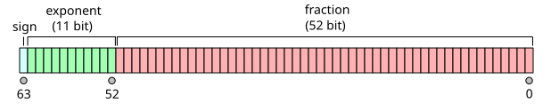
print(0.1 + 0.2)
print(0.1 + 0.2 == 0.3)
0.30000000000000004 False
Nguồn: Python — Floating-Point Arithmetic: Issues and Limitations · IEEE 754-2019.
Dòng thời gian toán học tính toán
Các mốc là cột mốc tiêu biểu, không phải lịch sử đầy đủ của ngành.
Nguồn tổng quan: SIAM — Society for Industrial and Applied Mathematics · MacTutor — Babylonian mathematics.
Cổ đại: tính toán xấp xỉ
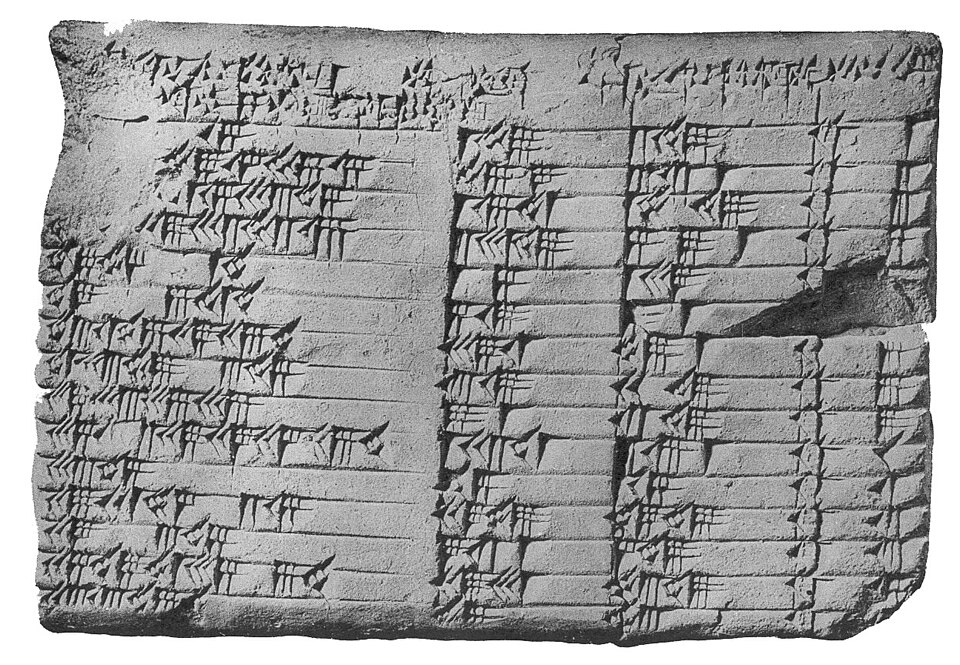
Người Babylon dùng hệ đếm lục thập phân và lập bảng số để tính toán. Họ cũng biết cách tính xấp xỉ căn bậc hai bằng phép lặp.
Ý tưởng “đoán một giá trị rồi cải thiện dần” này là nguồn gốc của phương pháp Newton, sẽ gặp lại ở cuối bài.
Thập niên 1940: máy tính điện tử
| Năm | Sự kiện |
|---|---|
| 1945 – 1946 | ENIAC bắt đầu chạy, dùng cho tính toán đạn đạo |
| 1947 | von Neumann và Goldstine phân tích sai số khi nghịch đảo ma trận lớn |
| 1948 | Turing nghiên cứu sai số làm tròn trong các phép biến đổi ma trận |
Nguồn: Penn Engineering — ENIAC · von Neumann & Goldstine, Numerical inverting of matrices of high order, 1947 · Turing, Rounding-off errors in matrix processes, 1948.
1950 – 1970: FORTRAN và phần mềm khoa học
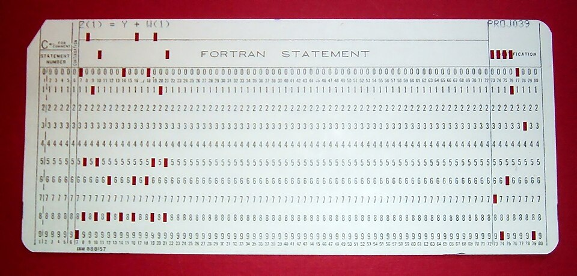
- 1957: IBM công bố FORTRAN, ngôn ngữ lập trình bậc cao đầu tiên được dùng rộng rãi cho tính toán khoa học.
- 1960s: George Forsythe thúc đẩy giải tích số trở thành ngành độc lập, đồng sáng lập khoa Khoa học máy tính của Stanford.
- 1962: Richard Hamming xuất bản Numerical Methods for Scientists and Engineers.
- 1979: BLAS và LINPACK chuẩn hóa các phép đại số tuyến tính cơ bản.
Nguồn: IBM — FORTRAN · MacTutor — Forsythe · Netlib — BLAS.
1990 – nay: LAPACK, NumPy, SciPy và GPU
| Mốc | Sự kiện |
|---|---|
| 1992 | LAPACK phát hành, thư viện đại số tuyến tính số chuẩn |
| 2001 | SciPy ra đời |
| 2006 | NumPy 1.0 |
| 2007 | NVIDIA công bố CUDA |
Nguồn: Netlib — LAPACK · SciPy 1.0, Nature Methods, 2020 · Harris et al., Array programming with NumPy, Nature, 2020.
Những nhân vật tiêu biểu
LANL, Attribution, Wikimedia Commons
Phạm vi công cộng, Wikimedia Commons
Phạm vi công cộng, Wikimedia Commons
Phạm vi công cộng, Wikimedia Commons
Nguồn: MacTutor — von Neumann · MacTutor — Turing · MacTutor — Forsythe. Chưa tìm được ảnh chân dung Hamming có giấy phép mở.
Ứng dụng 1. Đạo hàm xấp xỉ
Nhiều hàm không có công thức đạo hàm sẵn, hoặc quá phức tạp. Có thể xấp xỉ bằng sai phân hữu hạn:
| \(h\) | Bước nhỏ. \(h\) nhỏ giảm sai số xấp xỉ, nhưng \(h\) quá nhỏ làm tăng sai số làm tròn |
| \(f(x)=x^2\) | Ví dụ: \(f'(3)=6\). Xấp xỉ với \(h=0{,}001\) cho \(\frac{(3{,}001)^2-9}{0{,}001}=6{,}001\) |
Khai triển Taylor cho thấy sai số xấp xỉ khoảng \(\tfrac{h}{2}f''(x)\), tức sai số tỉ lệ thuận với \(h\).
Nguồn: Numerical differentiation · Goodfellow et al., Deep Learning, chương 4.
Đạo hàm xấp xỉ bằng Python
def f(x):
return x ** 2
x = 3.0
h = 0.001
numerical_derivative = (f(x + h) - f(x)) / h
exact_derivative = 2 * x
print("Đạo hàm xấp xỉ:", numerical_derivative)
print("Đạo hàm chính xác:", exact_derivative)
Đạo hàm xấp xỉ: 6.000999999999479 Đạo hàm chính xác: 6.0
Ứng dụng: gradient checking so sánh gradient viết tay với gradient số khi kiểm tra cài đặt backpropagation.
Sai số và bước \(h\)
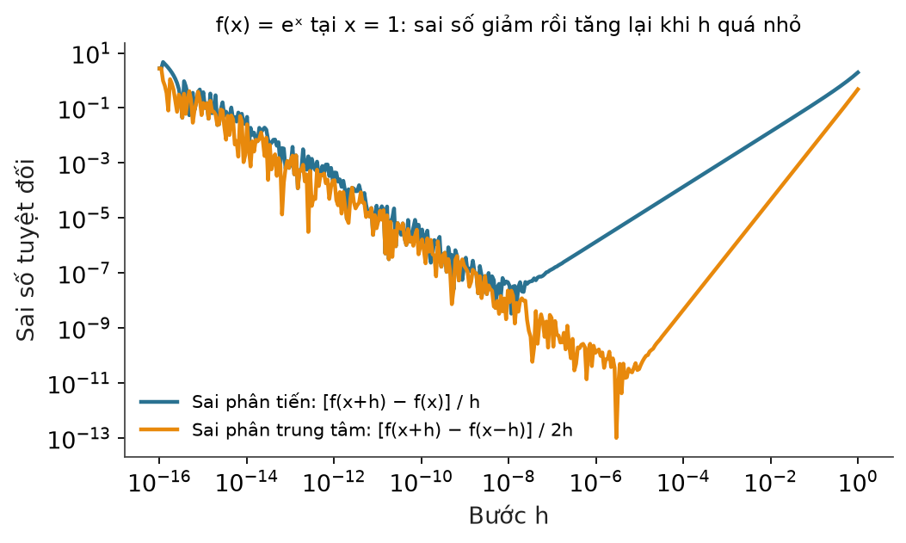
- \(h\) lớn: sai số do xấp xỉ chiếm ưu thế, giảm khi \(h\) giảm.
- \(h\) rất nhỏ: sai số làm tròn chiếm ưu thế và tăng trở lại.
- Có một giá trị \(h\) tối ưu ở giữa, khoảng \(\sqrt{\varepsilon_{\text{máy}}}\approx10^{-8}\).
Ứng dụng 2. Phương pháp Newton tính căn bậc hai
Tìm \(\sqrt{a}\) là tìm nghiệm của \(f(x)=x^2-a\). Phương pháp Newton lặp:
| \(x_n\) | Giá trị xấp xỉ ở bước \(n\) |
| \(a\) | Số cần lấy căn, ví dụ \(a=10\) |
| \(f'(x)\) | Đạo hàm \(2x\): tiếp tuyến tại \(x_n\) cắt trục hoành ở \(x_{n+1}\) |
Ý tưởng hình học: thay đường cong bằng tiếp tuyến rồi lấy giao điểm của tiếp tuyến với trục hoành. Đây là cách máy tính tính căn bậc hai từ rất lâu và vẫn là nền tảng của nhiều thuật toán tối ưu bậc hai.
Phương pháp Newton bằng Python
def newton_sqrt(number, initial=1.0, iterations=10):
x = initial
for i in range(iterations):
x = 0.5 * (x + number / x)
print(i + 1, x)
return x
result = newton_sqrt(10)
print("Kết quả:", result)
1 5.5 2 3.659090909090909 3 3.196005081874647 4 3.16245562280389 5 3.162277665175675 6 3.162277660168379 7 3.162277660168379 … Kết quả: 3.162277660168379
Tốc độ hội tụ
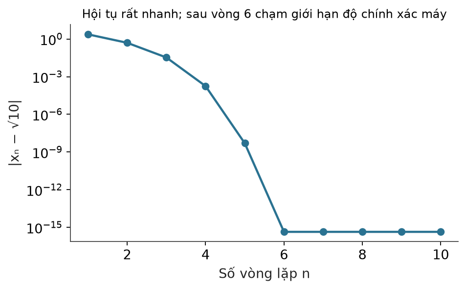
| Bước | \(x_n\) | Sai số |
|---|---|---|
| 1 | 5,5 | 2,34 |
| 2 | 3,659 | 0,497 |
| 3 | 3,196 | 0,034 |
| 4 | 3,16246 | 1,8·10⁻⁴ |
| 5 | 3,162277665 | 5·10⁻⁹ |
Liên hệ ngành: toán học tính toán
9.
Hình học và tô pô
Geometry & Topology: khoảng cách, hình dạng và cấu trúc của dữ liệu
Vì sao cần hình học và tô pô?
Mỗi khách hàng là một điểm trong không gian đặc trưng. Hai câu hỏi tự nhiên:
→ hình học: khoảng cách, góc
→ tô pô: thành phần liên thông, lỗ hổng
| Hình học (Geometry) | Tô pô (Topology) |
|---|---|
| Quan tâm khoảng cách, góc, độ dài | Quan tâm tính liên thông, lỗ hổng, hình dạng tổng thể |
| Thay đổi khi kéo giãn | Không đổi khi kéo giãn liên tục, không xé, không dán |
| Ví dụ: khoảng cách giữa hai khách hàng | Ví dụ: dữ liệu tạo thành một vòng tròn |
Dòng thời gian hình học và tô pô
Các mốc là cột mốc tiêu biểu, không phải lịch sử đầy đủ của ngành.
Nguồn tổng quan: MacTutor — A history of topology · G. Carlsson, Topology and Data, Bull. AMS 46, 2009.
1854: Riemann và khái niệm đa tạp
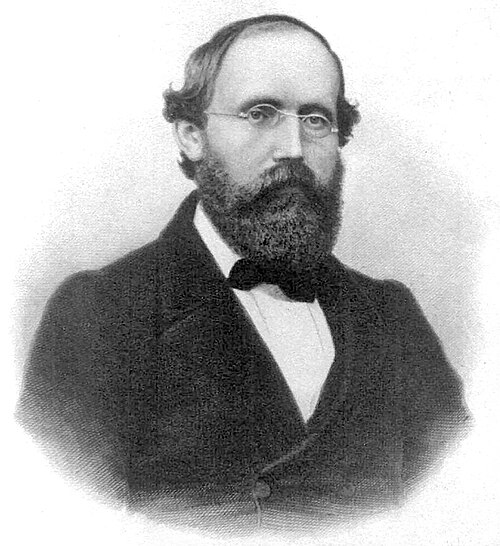
Phạm vi công cộng, Wikimedia Commons
Trong bài giảng habilitation Über die Hypothesen, welche der Geometrie zu Grunde liegen, Riemann đưa ra khái niệm đa tạp (manifold): một không gian có thể có số chiều bất kỳ, mà ở gần mỗi điểm trông giống không gian Euclid.
Nguồn: MacTutor — Riemann · Bản dịch bài giảng 1854 (Clifford).
1858: Möbius và dải một mặt
August Möbius và Johann Listing độc lập mô tả dải Möbius, năm 1858. Đây là ví dụ kinh điển về tính chất tô pô: dù kéo giãn hay uốn cong, dải vẫn chỉ có một mặt.
Tô pô nghiên cứu những tính chất không đổi dưới biến dạng liên tục.
Nguồn: MacTutor — Möbius.
1895: Poincaré và Analysis Situs
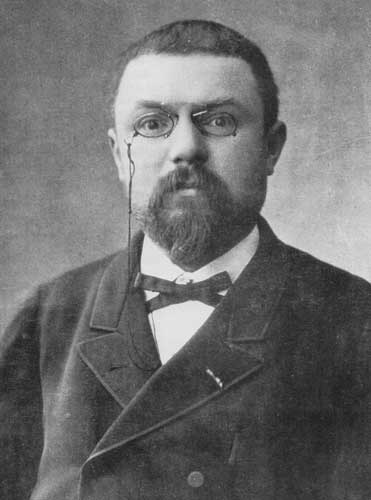
Phạm vi công cộng, Wikimedia Commons
Henri Poincaré công bố Analysis Situs, đặt nền tảng cho tô pô đại số. Ông đưa ra các bất biến như nhóm cơ bản và số Betti, dùng đại số để phân biệt các hình dạng.
| \(\beta_0\) | Số thành phần liên thông |
| \(\beta_1\) | Số vòng (lỗ hổng một chiều) |
| \(\beta_2\) | Số khoang rỗng |
Nguồn: MacTutor — Poincaré.
Từ năm 2000: Topological Data Analysis
| Năm | Công trình |
|---|---|
| 2002 | Edelsbrunner, Letscher, Zomorodian: Topological persistence and simplification, định nghĩa persistent homology |
| 2005 | Zomorodian và Carlsson: thuật toán tính persistent homology |
| 2009 | Carlsson: Topology and Data, tổng quan nền tảng của TDA |
| Thập niên 2010 | Thư viện mã nguồn mở như GUDHI đưa TDA vào thực hành |
David Eppstein, CC BY-SA 3.0, Wikimedia Commons
Katrin Breithaupt, Copyright is MFO, CC BY-SA 2.0 de, Wikimedia Commons
Nguồn: Edelsbrunner et al., 2002 · Zomorodian & Carlsson, 2005 · Carlsson, 2009.
Ứng dụng 1. Khoảng cách Euclid
Nhóm khách hàng có hành vi tương tự nhau là nhóm các điểm gần nhau. Khoảng cách Euclid giữa hai điểm:
Ví dụ hai khách hàng \(x=(2,3)\) và \(y=(5,7)\):
StandardScaler) trước khi tính.Khoảng cách Euclid bằng scikit-learn
import numpy as np
from sklearn.metrics.pairwise import euclidean_distances
customers = np.array([
[2, 3],
[5, 7],
[2, 4],
[9, 10]
])
distances = euclidean_distances(customers)
print(distances)
# Khách hàng gần nhất với khách hàng đầu tiên
scores = distances[0].copy()
scores[0] = np.inf
nearest = np.argmin(scores)
print("Khách hàng gần nhất:", nearest)
[[0. 5. 1. 9.89949494] [5. 0. 4.24264069 5. ] [1. 4.24264069 0. 9.21954446] [9.89949494 5. 9.21954446 0. ]] Khách hàng gần nhất: 2
(2, 4) sát (2, 3).Khoảng cách trong thực tế: KNN
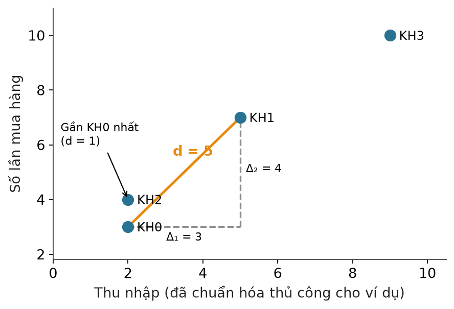
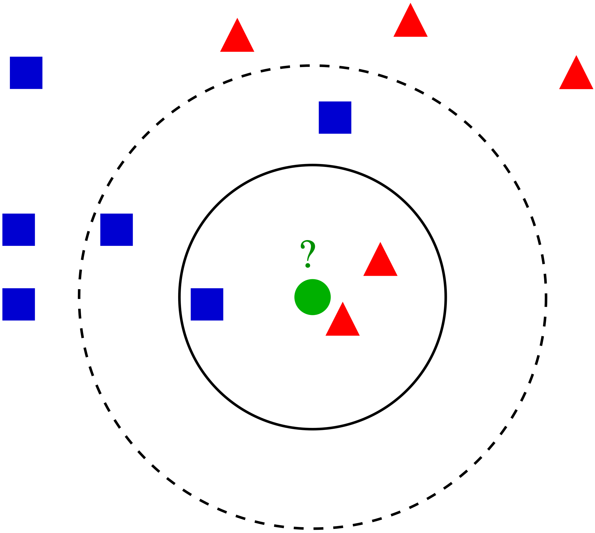
Khoảng cách là nền của k-NN, k-means, phân cụm phân cấp, DBSCAN và nhiều phương pháp tìm kiếm tương tự.
Ứng dụng 2. Persistent Homology: ý tưởng
Cho một đám mây điểm, vẽ quanh mỗi điểm một quả cầu bán kính \(\varepsilon\) và tăng dần \(\varepsilon\). Hai điểm nối với nhau khi quả cầu chạm nhau.
Persistent Homology với GUDHI
Cài đặt: pip install gudhi. Dữ liệu là 100 điểm nằm gần một đường tròn, có nhiễu \(\sigma=0{,}03\).
import numpy as np
import gudhi as gd
import matplotlib.pyplot as plt
# Sinh dữ liệu nằm gần một đường tròn
np.random.seed(42)
n = 100
theta = np.linspace(0, 2*np.pi, n, endpoint=False)
X = np.column_stack([
np.cos(theta),
np.sin(theta)
])
X += np.random.normal(0, 0.03, X.shape)
# Xây dựng Vietoris-Rips complex
rips = gd.RipsComplex(
points=X,
max_edge_length=1.0
)
simplex_tree = rips.create_simplex_tree(
max_dimension=2
)
# Tính persistent homology
persistence = simplex_tree.persistence()
# In các khoảng tồn tại
for dim, interval in persistence:
print(
"Dimension:", dim,
"Birth/Death:", interval
)
# Vẽ biểu đồ persistence
gd.plot_persistence_diagram(persistence)
plt.show()
Dimension: 1 Birth/Death: (0.1400327386906784, inf) Dimension: 0 Birth/Death: (0.0, inf) Dimension: 0 Birth/Death: (0.0, 0.137126668567522) Dimension: 0 Birth/Death: (0.0, 0.13443162290972235) Dimension: 0 Birth/Death: (0.0, 0.1291850708281321) …
Nguồn: GUDHI — Geometry Understanding in Higher Dimensions, INRIA · GUDHI — persistence graphical tools.
Biểu đồ persistence
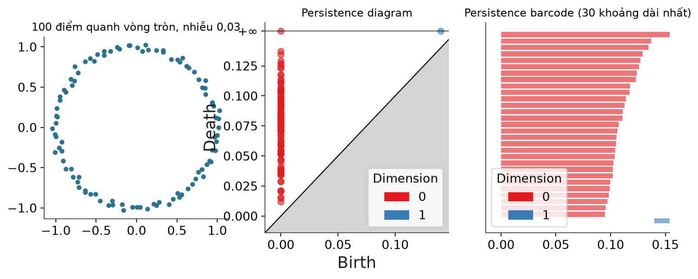
- Điểm \(H_1\) nằm xa đường chéo: đặc trưng bền, tức vòng thật.
- Các điểm \(H_0\) sát đường chéo hoặc thanh ngắn: nhiễu hoặc sự nhập cụm ban đầu.
max_edge_length và cách lấy mẫu. Việc diễn giải cần thận trọng.Giả thuyết đa tạp
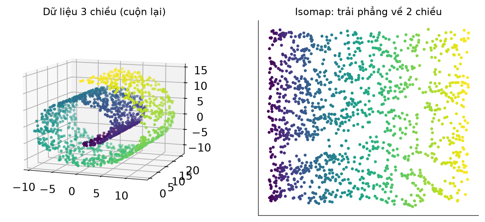
- Khoảng cách Euclid trong không gian gốc có thể gây hiểu lầm: hai điểm gần nhau trong 3 chiều có thể xa nhau dọc theo mặt cuộn.
- Các phương pháp học đa tạp (Isomap, t-SNE, UMAP) cố giữ cấu trúc cục bộ khi giảm chiều.
Nguồn: scikit-learn — Manifold learning · Tenenbaum, de Silva & Langford, Science, 2000.
Liên hệ ngành: hình học và tô pô
10.
Tổng kết tám nhánh
toán học
Mỗi nhánh giải một loại vấn đề, và nhiều nhánh cùng chạy trong một thuật toán
Bảng tổng hợp: nhánh toán và thuật toán
| Nhánh toán | Vấn đề giải quyết | Thuật toán, ứng dụng tiêu biểu |
|---|---|---|
| 1. Xác suất và thống kê | Bất định, dự đoán, kiểm định | Naive Bayes, A/B testing, hồi quy, Bayesian inference |
| 2. Đại số tuyến tính | Biểu diễn dữ liệu, tìm cấu trúc ẩn | PCA, SVD, embedding, hệ khuyến nghị, Transformer |
| 3. Giải tích | Sự thay đổi, hướng cải thiện | Gradient, backpropagation, tối ưu hàm mất mát |
| 4. Tối ưu hóa | Tìm tham số hoặc phương án tốt nhất | Gradient Descent, SGD, Adam, quy hoạch tuyến tính |
| 5. Toán rời rạc và đồ thị | Quan hệ giữa các đối tượng | PageRank, phát hiện cộng đồng, đường đi ngắn nhất, GNN |
| 6. Lý thuyết thông tin | Đo thông tin, độ bất định | Entropy, Information Gain, Cross-Entropy, cây quyết định |
| 7. Toán học tính toán | Tính toán số, sai số, hiệu năng | Sai phân hữu hạn, Newton, đại số tuyến tính số, GPU |
| 8. Hình học và tô pô | Khoảng cách, hình dạng dữ liệu | KNN, K-Means, manifold learning, Persistent Homology |
Bảng do biên soạn, tổng hợp từ nội dung bài 3 và bài 4.
Ví dụ tổng hợp: một mạng neural network
Bốn bước của một lần huấn luyện, và nhánh toán tương ứng:
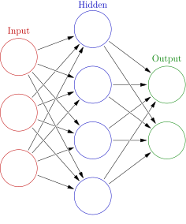
| \(W,b\) | Trọng số và độ lệch: các tham số cần học |
| \(\sigma\) | Hàm kích hoạt, ví dụ sigmoid, ReLU |
| \(y_i,\hat y_i\) | Nhãn thật (one-hot) và xác suất dự đoán |
| \(\eta\) | Tốc độ học (learning rate) |
Nguồn: Goodfellow et al., Deep Learning, chương 6. Thêm các nhánh còn lại: đồ thị cho GNN, tính toán số cho GPU và độ chính xác hỗn hợp, hình học cho không gian embedding.
11.
Thư viện mã nguồn mở
Chín thư viện Python thường dùng cho phần toán của khoa học dữ liệu
Chín thư viện mã nguồn mở
NumPy · SciPy · pandas · scikit-learn · PyTorch · NetworkX · GUDHI · SymPy · CVXPY. Logo thuộc về các dự án tương ứng.
Thư viện và nhánh toán
| Thư viện | Nhánh toán chính | Hàm tiêu biểu |
|---|---|---|
| NumPy, SciPy | Đại số tuyến tính, thống kê, tối ưu hóa | np.linalg, scipy.optimize.linprog, scipy.stats.entropy |
| Scikit-learn | Đại số tuyến tính, tối ưu hóa, thông tin, hình học | PCA, SGDRegressor, DecisionTreeClassifier, euclidean_distances |
| NetworkX | Toán rời rạc và đồ thị | pagerank, shortest_path |
| GUDHI | Hình học và tô pô | RipsComplex, persistence |
| PyTorch | Giải tích, tối ưu hóa | autograd, torch.optim |
| SymPy, CVXPY | Giải tích ký hiệu, tối ưu lồi | diff, integrate, Problem.solve |
PyTorch, SymPy và CVXPY chưa có mã trong hai bài, dùng ở các lab. Môi trường chạy lại mã của hai bài: Python 3.12, NumPy 2.5.4, SciPy 1.18.1, scikit-learn 1.9.1, NetworkX 3.7, GUDHI 3.13.0.
12.
Kết luận
Khi muốn … thì học …
Thông điệp cuối
Khoa học dữ liệu không chỉ là công cụ. Mỗi thuật toán đều dựa trên một hoặc nhiều nhánh toán học đã phát triển qua hàng trăm năm.
Thư viện giúp chạy thuật toán nhanh, nhưng hiểu được toán học bên dưới mới giúp chọn đúng phương pháp, nhận ra khi nào kết quả sai và cải tiến mô hình.
Tổng kết buổi 4
- Đồ thị: PageRank cho C = 0,384, A = 0,369; đường đi ngắn nhất A–C–B–D–E có chi phí 10.
- Lý thuyết thông tin: entropy 1; 0,469; 0 bit; information gain của nút gốc cây quyết định ≈ 0,561 bit, độ chính xác 0,956.
- Toán học tính toán: sai phân hữu hạn cho 6,001 thay vì 6; Newton hội tụ về \(\sqrt{10}\approx3{,}1622777\) sau 6 bước.
- Hình học và tô pô: khoảng cách Euclid \(d=5\); Persistent Homology phát hiện đúng một vòng trong dữ liệu.
- Toàn bộ: tám nhánh toán cùng chạy trong một mạng neural network.
Học liệu tham khảo
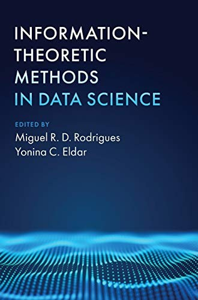
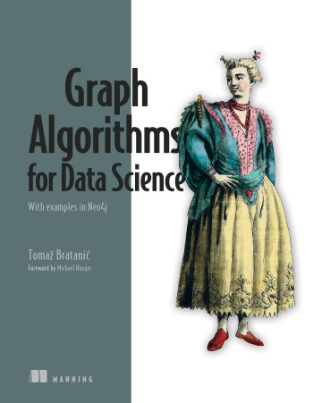
Nguồn: Cambridge University Press — Information-Theoretic Methods in Data Science (DOI) · Manning — Graph Algorithms for Data Science. Ảnh bìa dùng với mục đích giới thiệu học liệu. Liên quan trực tiếp đến mục 6 (đồ thị) và mục 7 (lý thuyết thông tin).
Việc cần làm sau hai bài
- Chạy lại toàn bộ mã của bài 3 và bài 4, đối chiếu từng số in ra với số trên slide.
- Với đồ thị PageRank, thêm cạnh
("E", "A")và dự đoán điểm của A, C thay đổi thế nào trước khi chạy. - Đổi
htrong ví dụ đạo hàm xấp xỉ thành \(10^{-4}\), \(10^{-8}\), \(10^{-12}\) và giải thích xu hướng của sai số. - Tăng nhiễu của dữ liệu vòng tròn từ 0,03 lên 0,3 và quan sát điểm \(H_1\) trên persistence diagram.
- Chọn một thuật toán yêu thích, liệt kê các nhánh toán mà nó dùng.